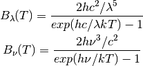
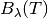
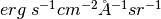
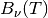

Analytic Functions (astropy.analytic_functions)¶
Introduction¶
The astropy.analytic_functions subpackage provides analytic functions that are commonly used in astronomy. These already understand Quantity, i.e., they can handle units of input and output parameters.
In future versions of astropy, many of these might be accessible as Model.
Getting Started¶
>>> from astropy import units as u
>>> from astropy.analytic_functions import blackbody_lambda, blackbody_nu
Calculate blackbody flux for 10000 K at 6000 Angstrom:
>>> blackbody_lambda(6000 * u.AA, 10000 * u.K)
<Quantity 15315791.836941158 erg / (Angstrom cm2 s sr)>
>>> blackbody_nu(6000 * u.AA, 10000 * u.K)
<Quantity 0.00018391673686797075 erg / (cm2 Hz s sr)
Using astropy.analytic_functions¶
Blackbody Radiation¶
Blackbody flux is calculated with Planck law (Rybicki & Lightman 1979):

where the unit of  is
, and  is
 .
blackbody_lambda() and
blackbody_nu() calculate the
blackbody flux for and , respectively.
.
blackbody_lambda() and
blackbody_nu() calculate the
blackbody flux for and , respectively.
Examples¶
>>> import numpy as np
>>> from astropy import units as u
>>> from astropy.analytic_functions import blackbody_lambda, blackbody_nu
Calculate blackbody flux for 5000 K at 100 and 10000 Angstrom while suppressing any Numpy warnings:
>>> wavelengths = [100, 10000] * u.AA
>>> temperature = 5000 * u.K
>>> with np.errstate(all='ignore'):
... flux_lam = blackbody_lambda(wavelengths, temperature)
... flux_nu = blackbody_nu(wavelengths, temperature)
>>> flux_lam
Quantity [1.27452545e-108, 7.10190526e+005] erg / (Angstrom cm2 s sr)>
>>> flux_nu
<Quantity [4.25135927e-123, 2.36894060e-005] erg / (cm2 Hz s sr)>
Plot a blackbody spectrum for 5000 K:
(Source code, png, hires.png, pdf)
{kind=link}
{kind=link}
See Also¶
Rybicki, G. B., & Lightman, A. P. 1979, Radiative Processes in Astrophysics (New York, NY: Wiley)
Reference/API¶
astropy.analytic_functions.blackbody Module¶
Functions related to blackbody radiation.
Functions¶
| blackbody_nu(in_x, temperature) | Calculate blackbody flux per steradian, . |
| blackbody_lambda(in_x, temperature) | Like blackbody_nu() but for . |